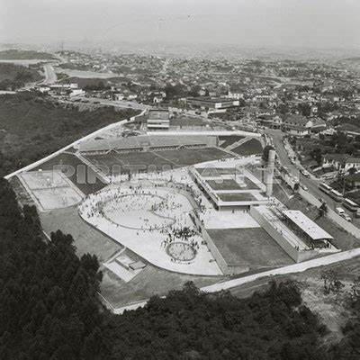

POR QUE PIRITUBA É CONHECIDO?
O bairro é muito conhecido por conta de um dos clubes mais prestigiados de toda a cidade SP estar localizado nele, o clube holandês chamado Casa de Nassau foi um grande influenciado pelas colônias de ingleses, italianos e russos.
Além disso, a linha A da Companhia Paulista de Trens Metropolitanos (CPTM) passa pelo território do distrito e é muito utilizado por todos da região e por cidadãos de Jundiaí.
ITENS DIFERENCIAIS
O diferencial que caracteriza o bairro de Pirituba é que ele foi considerado a segunda área mais verde da cidade de São Paulo, com aproximadamente 6 milhões de m² de vegetação, segundo a Secretaria Municipal de Verde e Meio Ambiente (SVMA)

REFERÊNCIAS
- Igreja Centenária
- Vista descansada
- Guerreiro de Taco e Luvas
- Instituição gastronômica
- Palacete da Marquesa
- Teatro Cacilda Becker